KHAI BÁO SỬA - HỦY DANH MỤC, ĐỊNH MỨC
Để khai báo sửa đổi, hủy bỏ danh mục nguyên liệu, sản phẩm hoặc định mức đã duyệt trên phần mềm ECUS5VNACCS, doanh nghiệp tiến hành theo các bước hướng dẫn sau.
1. Đối với loại hình sản xuất xuất khẩu:
Bạn vào menu Loại hình / Sản xuất xuất khẩu sau đó chọn mục Khai báo sửa, hủy danh mục, định mức:
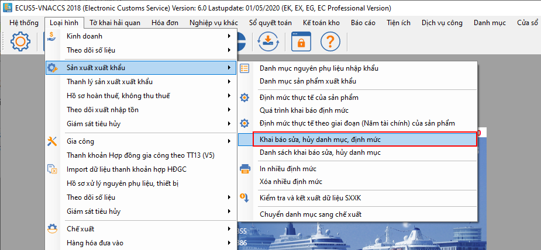
Màn hình chức năng hiện ra như sau:
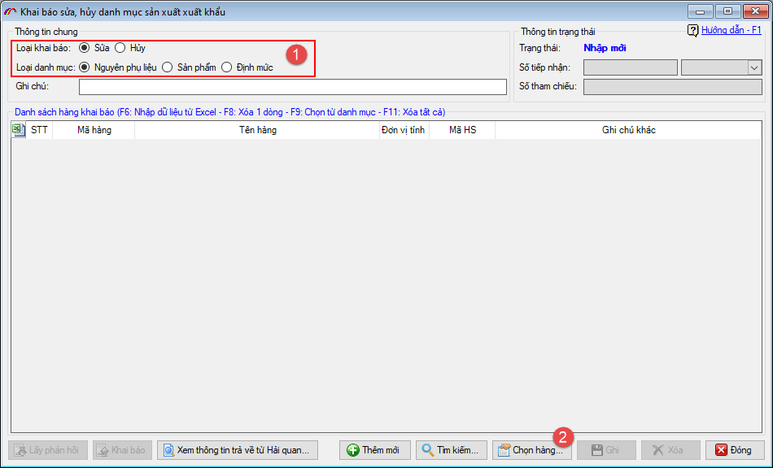
Bạn tiến hành chọn loại khai báo là Sửa hay Hủy và chọn loại danh mục (1).
Sau đó nhấn nút Chọn hàng… (2) để chọn các mã hàng cần sửa, hủy.
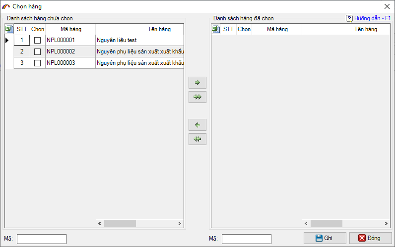
Bạn tiến hành sửa đổi nội dung cần thiết, sau đó nhấn nút Ghi để lưu lại thông tin sửa:
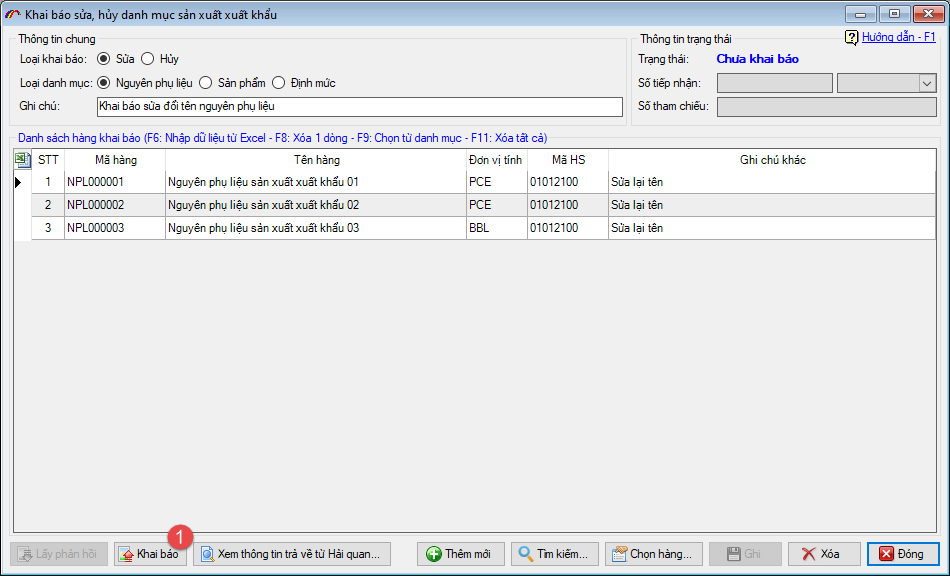
Nhấn nút Khai báo để gửi thông tin khai báo sửa đổi lên cơ quan Hải quan, phần mềm sẽ yêu cầu bạn chọn thiết bị chữ ký số:
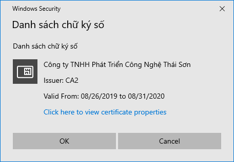
Nhập mã PIN cho thiết bị sau đó nhấn nút Đăng nhập:
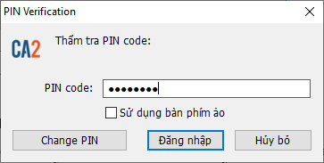
Bạn tiếp tục nhấn lấy phản hồi đến khi nhận được số tiếp nhận trả về từ cơ quan Hải quan là việc khai báo đã hoàn tất.
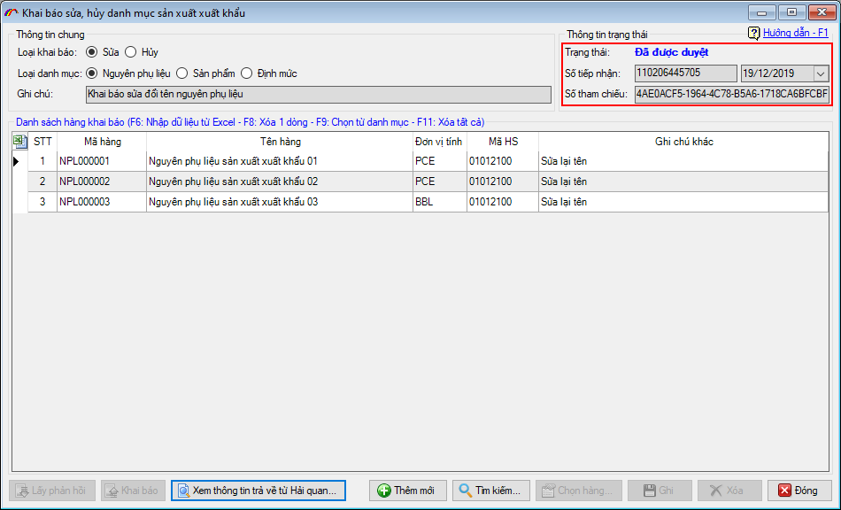
2. Đối với loại hình Gia công.
Đối với loại hình Gia công, nếu có thay đổi, bổ sung danh mục Nguyên phụ liệu, Sản phẩm, Thiết bị, Hàng mẫu thì doanh nghiệp sử dụng chức năng khai báo Phụ kiện.
Để khai báo sửa, hủy định mức, bạn vào menu Loại hình / Gia công sau đó chọn mục Khai báo sửa, hủy định mức.
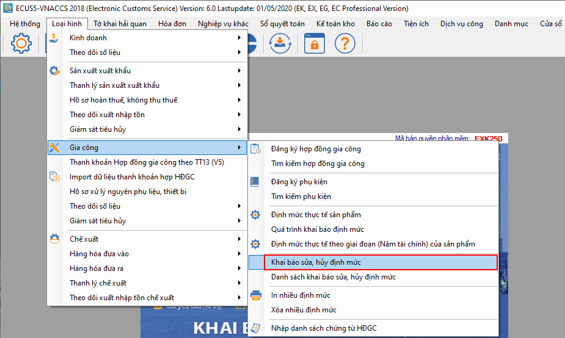
Phần mềm yêu cầu bạn chọn hợp đồng có định mức cần khai báo sửa, hủy:
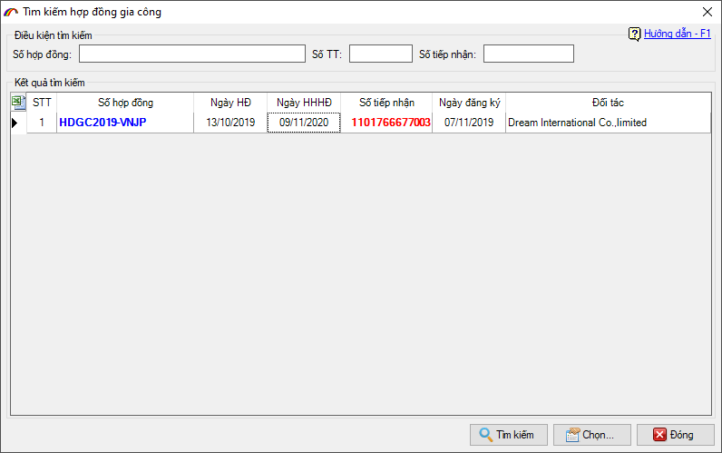
Giao diện chức năng khai báo sửa, hủy định mức hiện ra như sau:
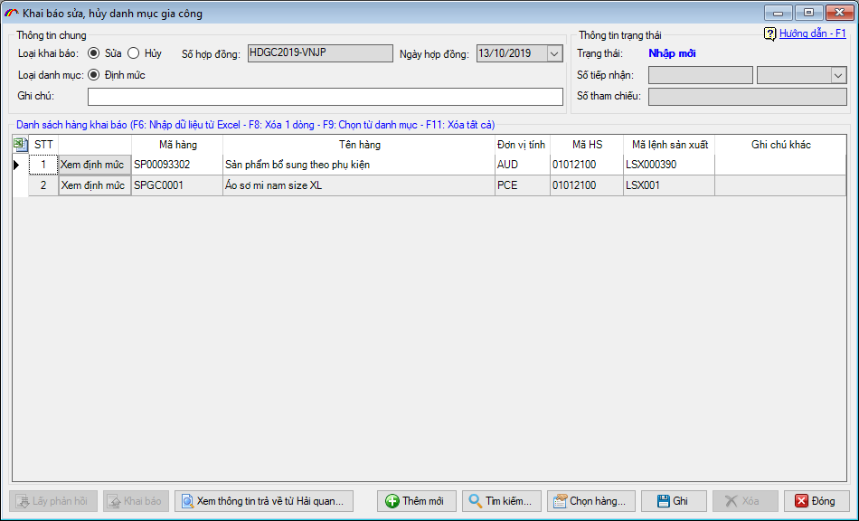
Bạn tiến hành chọn và khai báo sửa giống như đối với loại hình sản xuất xuất khẩu đã hướng dẫn ở trên.
3. Đối với loại hình Chế xuất.
Đối với loại hình chế xuất, để sửa, hủy danh mục, định mức bạn vào menu Loại hình / Chế xuất sau đó chọn mục Khai báo sửa, hủy danh mục, định mức:
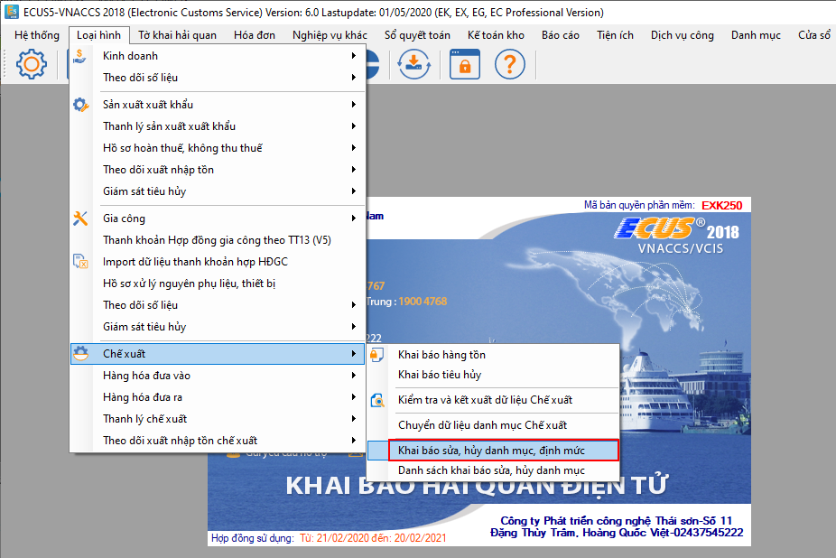
Giao diện chức năng hiện ra như sau:
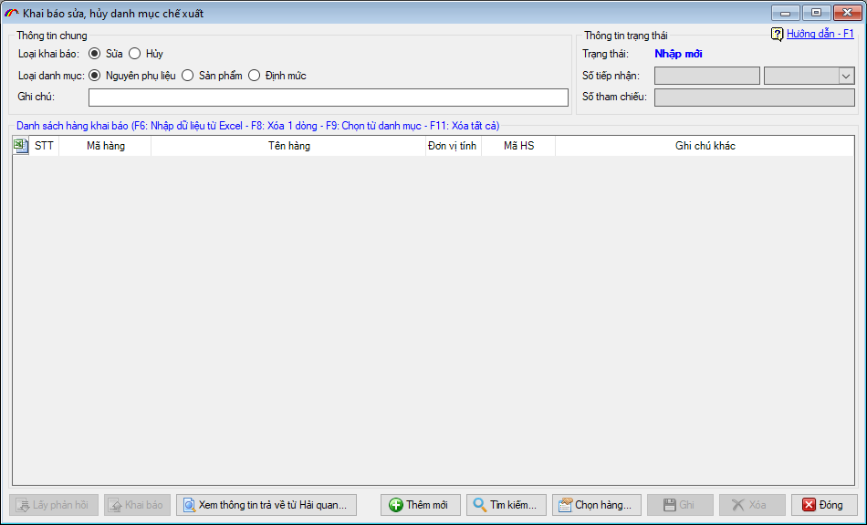
Bạn tiến hành chọn và khai báo như đối với phần hướng dẫn loại hình sản xuất xuất khẩu ở trên.